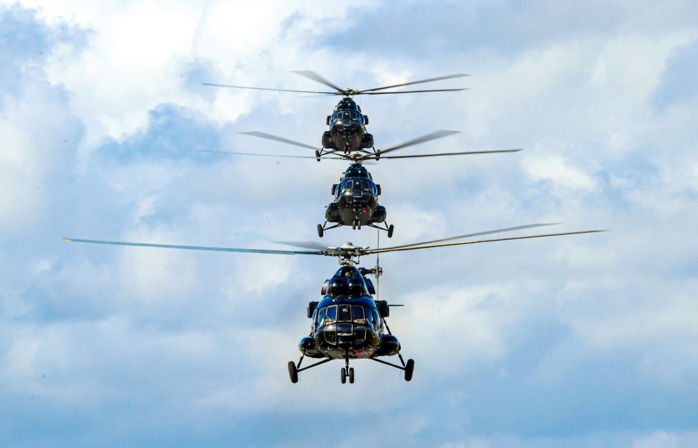
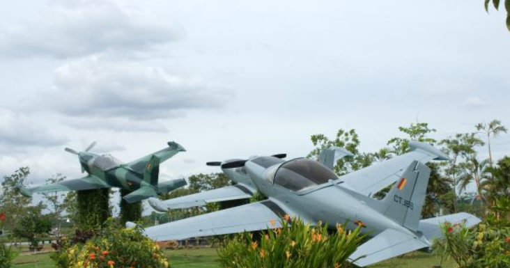
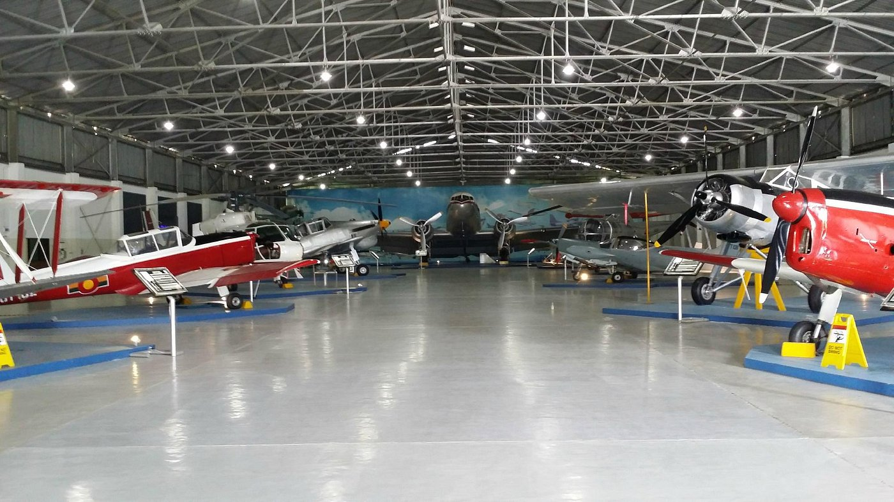
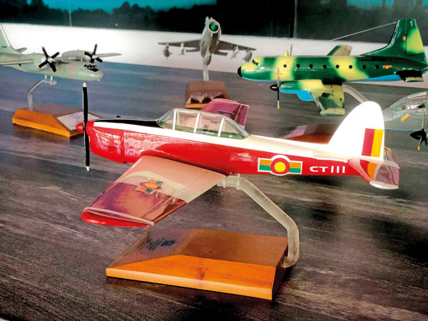
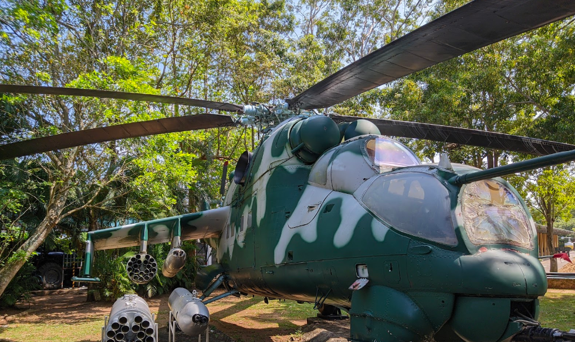

WITNESS THE WINGS OF THE NATION
Step inside the Sri Lanka Air Force Museum at Ratmalana and journey through decades of aerial heritage. From legendary aircraft to preserved artefacts, explore the courage, innovation and sacrifice that shaped Sri Lanka's skies.

VISITOR
REVIEWS.
Hear from those who have walked through our hangars and experienced the proud legacy of the Sri Lanka Air Force first-hand.
"An incredible experience. The vintage aircraft collection is breathtaking and the staff are very knowledgeable. A must-visit for anyone interested in aviation history."
"We visited with our school group and it was truly educational. The outdoor exhibits and the mini-cinema were our highlights. Highly recommend for families!"
"Fascinating place that honours the brave men and women of the Air Force. The library and scale model workshop are hidden gems. Well worth the trip to Ratmalana."
See what it takes.



Flying
Legends.
Sri Lanka's only national aviation museum houses a remarkable fleet of aircraft — from World War II-era biplanes fully restored to flying condition, to combat jets that defended the nation's skies.
